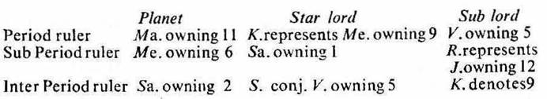

1. The significator shows the source of an event. The matters especially of the house or houses owned by it serve as the source
2. The significator gives the results of its star lord. So the star lord becomes the indicator of the matters of the house occupied and owned by it and also of the house aspected by it
3. (a) The sub lord of the significator is the deciding factor regarding the matters of the star lord.
(b) If the sub lord is harmonious to the matters indicated by the star lord, the significator gives favourable results.
(c) If the sub lord is detrimental to the matters indicated by the star lord, the significator gives unfavourable results.
4. The significator gives during its period, sub period or inter period the results of its star lord.
Or, the results of the star lord are experienced during the joint period (i.e. during the period, sub period and inter period) of the significator, its star lord and its sub lord,
5. In short, the significator denotes the time when it will give the results of its star lord.
The sub lord of the significator shows whether these results will be favourable or unfavourable.
Education. The houses 4, 9 and 11 are for education or studies; while 3 and 8 for completion or negation or denial of studies.
(a) Moon is the significator of 9 (in the Star Mercury owning 9). Its Sub lord Sun is the owner of 8 (12th from 9), so it is detrimental to the matters of 4, 9 and 11. Hence the significator Moon cannot give favourable results regarding studies. Thus the native after passing his B.A. examination in the year 1934–35 during the joint period of Venus and Moon, gave up his studies
(b) Rahu is the significator of 9 (in the Star Mercury owning 9). Its sub lord is also Rahu which is harmonious to the matters of 4, 9 and 11, Hence the significator Rahu will give favourable results regarding studies. Thus the native prosecuted his further studies in Law in the year 1939 during the period of Venus in the sub period of Rahu.
(c) In short if the sub lord is the owner or occupant of 3 or 8; or is in the star of the occupant or owner of 3 or 8; or is in conj. or in aspect with the significator of 3 or 8, it is said to be detrimental to the matters of 4, 9 or 11.
If the sub lord is the occupant or owner of 4, 9 or 11; or is in the star of the occupant or owner of 4, 9 and 11; or is in conj. or in aspect with the significator of 4, 9 or 11, it is said to be harmonious to the matters of 4, 9 and 11.
In other words, if the sub lord is the significator of 4, 9 or 11 it is said to be harmonious to and connected with the matters of 4, 9 and 11.
If the sub lord is the significator of 3 or 8 it is detrimental to the matters of 4, 9 and 11 and it is said to be connected with 3 and 8.
Marriage. The houses 2, 7 and 11 are for marriage; while 1, 6 and 10 for denial of marriage.
(a) Moon is the significator of 7 (in the Star Mercury in 7). Its sub lord Sun occupies 6 (12th from 7), so it is detrimental to the matters of 2, 7 and 11. Hence the significator Moon cannot give favourable results regarding marriage. Thus the native could not marry during the joint period of Venus and Moon.
(b) Rahu is the significator of 7 (in the Star Mercury in 7). Its sub lord is also Rahu which is harmonious to the matters of 2, 7 and 11. Hence the significator Rahu will give favourable results regarding marriage. Thus the native could marry in the year 1937 during the period of Venus in the sub period of Rahu.
(c) In short if the sub lord is the significator of 1, 6 or 10 it is detrimental to the matters of 2, 7 and 11 and it is said to be connected with 1, 6 and 10.
If the sub lord is the significator of 2, 7 or 11 it is said to be harmonious to and connected with the matters of 2, 7 and 11.
Government loan. The houses 2, 6 and 11 are for gain of money in any manner; while 8 and 12 for repayment of money or loss of money in any manner.
Moon owns 7 (Govt. or Co-operative Society). It is the significator of 6 (receipt of loan) and 7 (money lender), because it is in the star Mercury owning 6 and occupying 7. The star lord Mercury is aspected by Saturn owning 2 (money) and Jupiter owning 12 (investment or repayment of money). So Mercury is connected with 2 and 12. Hence Moon signifies the matters of 2, 6, 7 and 12.
Its sub lord Sun owns 8 (repayment of loan) and occupies 6 (receipt of loan). So Sun is harmonious to the matters of 2, 6, 7 and 12 as indicated by the star lord Mercury.
Hence the significator Moon shows Govt. or Co-operative Society as the source of an event and it will give during its period favourable results of the star lord.
Thus during the period of Moon in the year 1958–59 the native could receive loan from Govt. through the Co-operative Society for constructing a building on the plot of the Society subject to its repayment.
Retirement from Service : The houses 1, 5, 9 and 12 are for retirement from service. The native retired from service on 8–6–1970 during the joint period of Mars, Mercury and Saturn the significators of 1, 5, 9 and 12.

Thus the joint period rulers Mars, Mercury and Saturn are respectively the owners of 11, 6 and 2. So they denote service as the source of retirement.
The period ruler Mars is the significator of 9, the sub period ruler Mercury is the significator of 1 and the inter period ruler Saturn is the significator of 5.
Their Sub lords are also the significators of 5, 12 and 9 respectively. So they are harmonious to the matters indicated by the star lords
Hence the significators Mars, Mercury and Saturn could during their joint period effect the event of retirement.